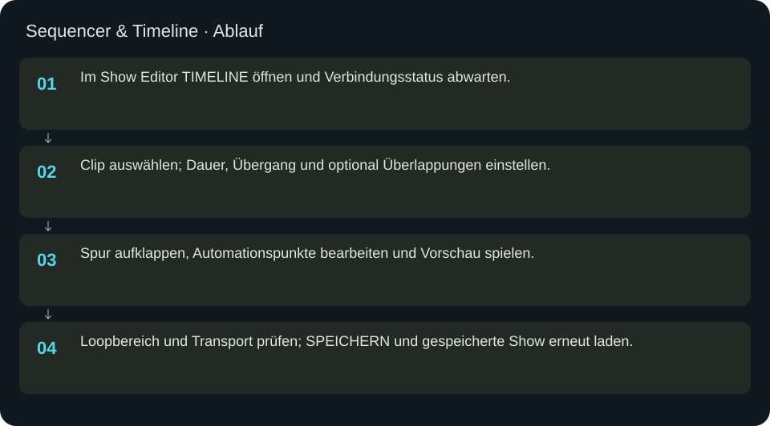
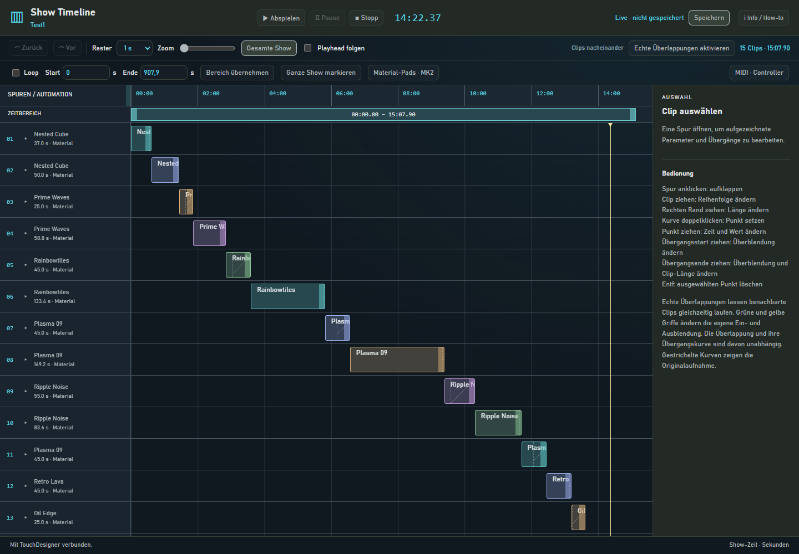
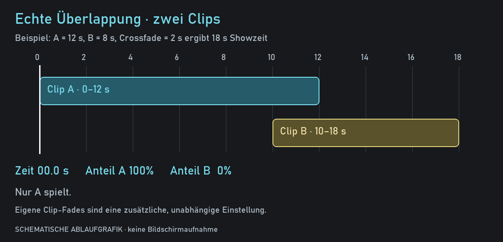

Sequencer & Timeline
Cues auf einer Zeitachse bearbeiten, Übergänge und Automationskurven prüfen und die Show speichern.
In welcher Reihenfolge?
- Im Show Editor TIMELINE öffnen und Verbindungsstatus abwarten.
- Clip auswählen; Dauer, Übergang und optional Überlappungen einstellen.
- Spur aufklappen, Automationspunkte bearbeiten und Vorschau spielen.
- Loopbereich und Transport prüfen; SPEICHERN und gespeicherte Show erneut laden.



Schritt für Schritt
Orientierung
Oben stehen Showname, Verbindung, Play/Pause/Stopp und Speichern. Das Raster bestimmt die Einrastschritte, Zoom die Darstellung. Gesamte Show passt die Ansicht an; Playhead folgen scrollt mit. Rechts bearbeitet der Inspector die ausgewählte Cue oder den ausgewählten Automationspunkt.
Clips und Übergänge
Clip anklicken zum Auswählen. Clip ziehen ändert Reihenfolge beziehungsweise Anordnung im jeweiligen Zeitmodus; rechten Rand ziehen ändert die Länge. Dauer übernehmen setzt den Zahlenwert. Übergangsart und Überblendung werden mit Übergang übernehmen bestätigt. Die Grenze des Übergangs kann direkt gezogen werden. Zurück/Vor macht Bearbeitungen rückgängig beziehungsweise wiederholt sie.
Echte Überlappungen
Echte Überlappungen aktivieren stellt das Show-Zeitmodell um. Benachbarte Clips laufen während der Überlappung gleichzeitig. Die im Inspector angezeigte tatsächliche Überlappung prüfen. Eigene Ein-/Ausblendungen betreffen die Deckkraft des einzelnen Clips; sie sind unabhängig vom Übergang zwischen zwei Clips. Grüne/gelbe Griffe und Kurven wählen lineare, glatte oder beschleunigte Verläufe.
Automation
Spur öffnen, um aufgezeichnete Parameter zu sehen. Doppelklick auf eine Kurve setzt einen Punkt; Ziehen verändert Zeit und Wert. Rechts die Werte genau eingeben und Punkt übernehmen drücken. Entf oder Punkt löschen entfernt den gewählten Punkt. Bearbeitung aktiv schaltet die Edit-Ebene; gestrichelte Kurven zeigen die Originalaufnahme. Original wiederherstellen entfernt die Bearbeitung dieser Spur zugunsten der Aufnahme.
Loop und Navigation
Loop aktivieren, Start und Ende in Show-Sekunden setzen und Bereich übernehmen wählen. Ganze Show markieren spannt den Bereich über die Show. Zeitleiste anklicken setzt den Abspielkopf. Leertaste bedient Wiedergabe, Strg+Z Undo und Strg+Umschalt+Z Redo; ein Eingabefeld kann Tastendrücke selbst verwenden.
Vollständiges Beispiel
Eine gespeicherte Show mit zwei Cues laden und TIMELINE öffnen. Erste Cue wählen, Dauer 12 übernehmen, crossfade und 2 Sekunden Übergang setzen. Zweite Cue auf 8 Sekunden setzen. Falls gewünscht echte Überlappungen aktivieren und die neue Gesamtzeit kontrollieren. Auf einer vorhandenen automatisierten Spur bei 3.5 Sekunden einen zulässigen Wert, etwa 0.5, setzen. Show spielen, Übergang visuell kontrollieren, stoppen und speichern. Show erneut auswählen und die Kurve sowie Timingwerte gegenprüfen.
Weitere Dialoge
Material-Pads · MK2 öffnet Padzuweisung, Bankwahl und direkte Hardwareverbindung. MIDI · Controller öffnet Gerätewahl und Learn-Mapping. Diese beiden Anbindungen sind unterschiedliche Wege; die Display-/Tastenbedienung der direkten MK2-Anbindung wird in mk2.html erklärt.
Eingaben & Beispiele
| Feld | Bedeutung | Beispiel |
|---|---|---|
duration | Clip-Dauer in Sekunden, mindestens 0.1. | 12 |
fadeDuration | Übergangs-/Überlappungsdauer in Sekunden. | 2 |
clipFadeIn | Eigene Einblendung dieses Clips in Sekunden. | 1 |
clipFadeOut | Eigene Ausblendung dieses Clips in Sekunden. | 1 |
loopStart | Beginn des Loopbereichs in Show-Sekunden. | 0 |
loopEnd | Ende des Loopbereichs, größer als Start. | 20 |
pointTime | Zeitpunkt relativ zum Clip, in Sekunden. | 3.5 |
pointValue | Wert im zulässigen Bereich des gewählten Parameters. | 0.5 |
snap | Rasterweite für Ziehen; Aus erlaubt freie Positionierung. | 0.5 |
zoom | Zeitmaßstab der Timeline. | 10 |
Numerische Eingaben verwenden einen Punkt als Dezimaltrennzeichen. IPs, Pfade, Quellstarts und Universen zuerst mit der tatsächlichen Installation vergleichen.
Woran erkenne ich Erfolg?
Die erwartete Ansicht öffnet, Status und Vorschau entsprechen der gewählten Aktion, und es erscheint kein Fehler. Änderungen beim nächsten Laden beziehungsweise im Live-Status erneut lesen. Ein erfolgreicher Bildschirmtest beweist weder physische LED-Ausgabe noch korrekte Kameramessung.
Quellennachweis
Dateipfade im Projekt-Repository; die Onlinehilfe gibt keinen allgemeinen Dateisystemzugriff frei.
pixelblaze_mapper/timeline_assets/index.htmlpixelblaze_mapper/timeline_assets/timeline.jspixelblaze_mapper/show_timeline_ui.pypixelblaze_mapper/show_timeline.py